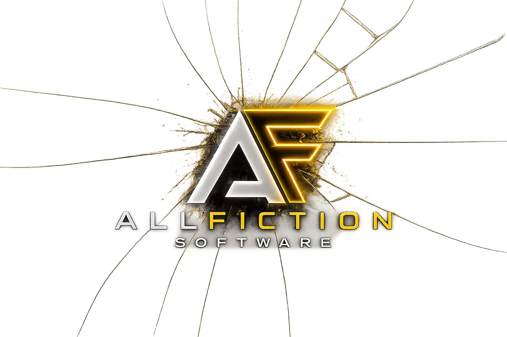

Software y automatización con IA aplicada
ENFOQUE TÉCNICO
Construcción práctica de software, automatización e IA
Allfiction Software reúne productos, prototipos y herramientas técnicas orientadas a resolver problemas reales: plataformas web, automatizaciones, paneles, APIs, asistentes con IA, seguridad local y flujos operativos reproducibles.
MÉTODO DE TRABAJO
Proceso técnico de trabajo
Cada proyecto se aborda como un sistema evolutivo: primero se entiende el problema, después se define una arquitectura simple, se valida el flujo principal, se automatiza lo repetible y se documenta lo necesario para sostenerlo.
Diseñar
Definir objetivo, restricciones, arquitectura inicial y alcance público.
Validar
Probar comportamiento, revisar seguridad, detectar errores y medir límites.
Automatizar
Convertir procesos repetibles en scripts, comandos, CLI o flujos controlados.
Documentar
Registrar decisiones, estado actual, próximos pasos y comandos reproducibles.
SERVICIOS
Capacidades técnicas de construcción
Áreas donde Allfiction Software concentra desarrollo, automatización, integración de IA y operación técnica para convertir ideas o procesos en sistemas utilizables.
Software y productos web
Desarrollo interfaces, flujos, APIs, persistencia y lógica de negocio para convertir necesidades concretas en productos funcionales.
Automatización y herramientas
Diseño scripts, CLI, validaciones y procesos reproducibles para reducir trabajo manual y mejorar trazabilidad.
IA aplicada
Integro modelos, asistentes técnicos, procesamiento de texto y flujos de decisión para mejorar productividad y análisis.
Linux, seguridad y operaciones
Trabajo sobre entornos Linux, hardening defensivo, diagnóstico, documentación operativa y mantenimiento técnico.
SOLUCIONES
Software orientado a productos, operaciones e IA
La web reúne proyectos que muestran capacidades de construcción real: interfaces, APIs, lógica de negocio, automatización, despliegue, documentación, integración de modelos de IA y operación técnica.
Plataformas y paneles
Desarrollo de aplicaciones web, dashboards, módulos administrativos, landings comerciales y experiencias orientadas a usuarios reales.
Workers, bots e integraciones
Integración de APIs, formularios conectados, bots de contacto, procesos reproducibles y herramientas internas para reducir trabajo manual.
LLMs y asistentes técnicos
Uso de modelos locales y cloud, ruteo híbrido, asistentes de código, flujos con contexto y herramientas orientadas a productividad técnica.
PRODUCTOS / PROYECTOS
Software construido desde laboratorio, producto y operación real
Una selección de sistemas propios donde Allfiction Software muestra desarrollo web, backend, automatización, IA aplicada, seguridad local, despliegue y documentación técnica.
Producto SaaS
Activo
ERGO CLUB / ERGO V2
Plataforma web/PWA para gimnasios: landing pública, paneles, experiencia mobile, gestión de socios, actividades, membresías y arquitectura preparada para escalar.
IA / LLM
Activo
PolyLLM Router
Router híbrido para coordinar modelos locales y cloud, optimizar tokens, elegir proveedor según tarea, validar respuestas y ejecutar flujos técnicos con contexto.
Seguridad
Lab
Redwatch Security Panel
Panel read-only para visualizar métricas sanitizadas de un agente local: escaneo, detecciones, cuarentena y estado operativo sin exponer datos sensibles.
IA aplicada
Dev tool
Traductor IA / Local Translator
Herramientas para traducción técnica, OCR, adaptación de lenguaje y soporte a flujos español/inglés aplicados a documentación, prompts, interfaces y contenido técnico.
CATÁLOGO
Más proyectos y herramientas técnicas
Selección de proyectos y productos técnicos en distintas etapas: desarrollo, validación, documentación, mejora continua o preparación para publicación.
Activo
IA local
Router LLM híbrido
Sistema para coordinar modelos de lenguaje, planificación asistida, ejecución controlada, perfiles de costo y validaciones técnicas sin depender de un único proveedor.
- Ejecución local controlada
- Planificación asistida opcional
- Rutas híbridas, control de costo y trazabilidad
Activo
Qwen
Asistente local de código
Herramienta orientada a tareas de código, asistencia interactiva, contexto de proyecto, validación de respuestas y ejecución controlada con modelos locales.
- CLI para tareas de código
- Gestión de contexto y presupuesto
- Perfiles de ejecución y validación
Activo
Infraestructura
Orquestador de entornos técnicos
Sistema para organizar entornos técnicos, validar configuraciones, documentar capacidades generales y mantener flujos seguros de automatización.
- Inventario técnico validado
- Perfiles de entorno y capacidades
- Validaciones protegidas por controles
Estable
Web app
Gym Control / Qivox Gym Demo
Aplicación web orientada a gestión operativa. Integra frontend, backend, base de datos, estados trazables y lógica de confirmación para flujos reales.
- Frontend + backend + persistencia
- Estados operativos y validación
- Preparación para despliegue
En diseño
Seguridad
Antivirus / Hardening Linux
Proyecto de herramientas para análisis local, escaneo, hardening, monitoreo básico y documentación de seguridad en equipos Linux.
- Escaneos locales y reportes
- Checklist de hardening
- Automatización de auditorías simples
En desarrollo
IA aplicada
Traductor IA
Traductor asistido por IA para flujos de texto, documentación, prompts y adaptación de lenguaje técnico entre español e inglés.
- Traducción técnica
- Normalización de tono
- Preparado para integración con modelos locales
SEGURIDAD · ARCH LINUX · RUST
Redwatch Security Panel
Panel read-only separado de Panda. Muestra métricas sanitizadas de un agente local con ClamAV, historial SQLite y export público seguro para portfolio.
Cargando estado…
Archivos escaneados
—Detecciones
—Cuarentena
—Scans exportados
—Producto Full Stack · SaaS / PWA
ERGO CLUB / ERGO V2
Plataforma web/PWA para gestión de gimnasio: landing pública, app mobile para socios, admin desktop para staff, backend API, membresías, pagos, leads y operación interna.
- Web pública separada en /web
- App mobile/PWA en /app
- Panel admin/staff en /admin
- Deploy en Cloudflare Pages + Worker
STACK
Tecnologías principales
IA local
Qwen, llama.cpp, GGUF, perfiles de contexto, endpoints OpenAI-compatible.
Backend
Python, Node.js, APIs, validación, CLI, pruebas unitarias y automatización.
Frontend
HTML, CSS, JavaScript, interfaces estáticas, dashboards y documentación visual.
Linux & Ops
Arch/Fedora, systemd, tmux, SSH, Git, scripts reproducibles y control local.
LLM
LLM
Modelos y rutas de IA usados en laboratorio local, automatización, análisis de código y optimización de tokens.
Qwen
Modelo principal para asistencia local, desarrollo, análisis técnico y flujos conectados a Panda IA mediante llama-server.
DeepSeek
Uso orientado a razonamiento, revisión de código, análisis backend y soporte dentro de estrategias de ruteo por costo/calidad.
Kimi
Aplicado en flujos donde conviene procesar más contexto, sintetizar información y reducir consumo innecesario de tokens antes de escalar a otro modelo.
Hermes
Útil para agentes, instrucciones estructuradas, respuestas consistentes y pruebas de comportamiento en pipelines locales.
Gemma
Modelo liviano para pruebas locales, prototipos, comparación de rendimiento y escenarios donde importa eficiencia sobre tamaño.
PolyLLM Router
Router para seleccionar modelo según tarea, costo, contexto y disponibilidad. Permite usar Kimi y DeepSeek en flujos de optimización de tokens, fallback y ejecución híbrida local/remota.
CONTACTO
Hablemos de una solución concreta
Si necesitás una web, una plataforma interna, una automatización, un bot, una integración con APIs o una solución con IA aplicada, podés dejar el contexto desde Panda para evaluar el enfoque técnico.